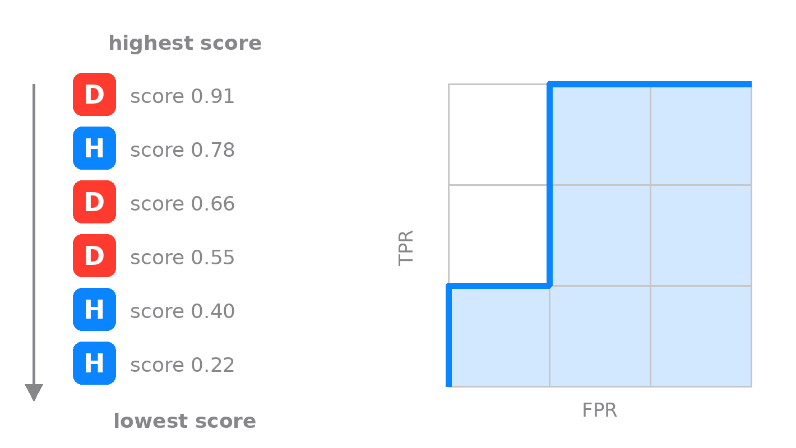

It starts with a ranking
Forget positive and negative for a moment. A test that outputs a score does one thing: it ranks patients. Line them up from the highest score to the lowest, and a good test pushes the sick toward the top and the healthy toward the bottom. Everything about ROC and AUC follows from that order, and nothing follows from the exact scores. Here are six patients, three sick and three healthy, sorted by their score.

Six patients, sorted so the one with the highest score is at the top and the lowest at the bottom. D is a patient who has the disease, H a healthy one. Read the list from the top down: step up for each D, step right for each H. The staircase you trace is the ROC curve.
To turn that ranking into the curve, take a grid three cells tall, one row for each patient who has the disease, and three cells wide, one column for each healthy one. Start in the bottom-left corner and read the sorted list from the top, one step per patient: up for a diseased patient, right for a healthy one. Our list opens with the diseased patient scoring 0.91, so the first move is up. Next is a healthy one at 0.78, a step right. Then two diseased patients in a row, 0.66 and 0.55, two steps up that carry you to the top edge. The last two are healthy, 0.40 and 0.22, two steps right into the top-right corner. Six patients, six moves; and because there are exactly three of each, three ups and three rights, you land in the top-right corner whatever their order. What the order changes is the path between the two corners, and that path is the ROC curve.
The six clean steps assume every patient has a different score. Real tests produce ties, and the honest move is not to invent an order the test never gave. When several patients share the same score, you make one diagonal move instead of separate steps: up by the number of diseased patients in the tied group, right by the number of healthy ones. A batch the test cannot separate becomes a straight diagonal on the curve rather than a staircase, which is why real ROC curves are part staircase and part slope. Take it to the limit, where the test gives everyone the identical score, and the whole curve falls onto the diagonal with an area of 0.5, exactly the verdict such a test has earned.
What the area actually counts
Now the payoff. The grid holds three times three, nine cells, and each cell is one pairing of a sick patient with a healthy one. A cell sits below the staircase exactly when that sick patient was ranked above that healthy one, which is the test getting that pair right. Count them: seven of the nine are below the line.
Each cell is one (sick, healthy) pair. Blue cells are pairs the test ordered correctly; the two crossed cells are the errors, where a healthy patient outscored a sick one.
So the area under the curve is not an abstract integral. It is the fraction of sick-and-healthy pairs the test ordered correctly, which is the same thing as the probability that a random sick patient outscores a random healthy one.
For these six patients AUC is 7/9, about 0.78. Two pairs went the wrong way, a healthy patient scoring above a sick one, twice. This is also the Mann-Whitney statistic, and in machine learning it is the standard score for a binary classifier, but the medical reading is the one to keep: how often the test ranks disease above health.
Three curves to keep in your head
A perfect test hugs the top-left corner (area 1). A useless one follows the diagonal (about 0.5). A perfectly wrong test runs along the bottom (area 0); it is a real test with its labels flipped.
A perfect test ranks every sick patient above every healthy one, so its curve shoots up the left edge and along the top. A test that ranks at random wanders along the diagonal at about 0.5. Below 0.5 is not noise; it is a test that works, with its output pointing the wrong way.
A cutoff is a single point on the curve
The score ranks patients, but eventually you have to act: above this cutoff, call it positive; below, negative. Choosing that cutoff is choosing one point on the ROC curve. Its height is the sensitivity you get, the true positive rate; its distance from the left edge is the false positive rate, one minus the specificity. Slide the cutoff and the point slides along the curve, trading sensitivity for specificity. Where to sit on that trade is a clinical decision, not a statistical one, and it is exactly what the playground is built to let you feel.
One number ties the two views together. Fix a cutoff, turn the score into a plain positive or negative, and the ROC shrinks to three points. The area under that shrunken curve is (sensitivity + specificity) / 2, the balanced accuracy at that operating point, and it is never larger than the AUC of the full ranking.